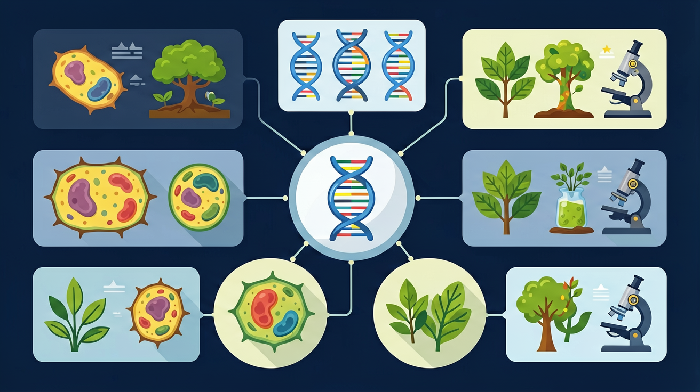

Gallery v1.0.0 · skill v7.14
遗传信息怎样被保存、表达、传递，又怎样影响性状？

先选一个卡点。后面的例子、互动和 AI 学伴都会围绕它给你最小提示。
选择或输入后，本课会围绕你的问题展开。
如果学生只说出概念名称，继续追问：题干里哪个证据最关键？这个证据对应分子、细胞、个体还是生态系统层级？如果改变 模板链、游离核苷酸、DNA聚合酶、复制次数和标记元素 中的一个条件，结果会怎样？这三问能把答案从背诵推进到科学解释。
❓ 为什么DNA复制时两条链方向相反？
❓ DNA复制为啥一定要有引物？
❓ 复制出错了会怎样？
学完这一课，这些问题你都能自信地回答。
已经知道：学生已掌握DNA双螺旋结构（含磷酸二酯键/氢键）、细胞分裂中染色体的行为变化（含姐妹染色单体概念），并理解碱基互补配对原则（A-T/C-G）。
但问题是：容易混淆半保留复制与全保留复制的实验证据差异，难以理解为何需要引物才能启动DNA聚合酶工作，且常误认为两条模板链同时连续复制。
所以学：当法医通过PCR扩增微量DNA破案时，需准确理解复制方向性（5'→3'）和冈崎片段的作用，才能设计正确的引物并解读电泳结果。
DNA复制时最先作用的酶是什么？
设计表格对比两种DNA扩增方式的酶、温度、引物等要素
现象入口：细胞分裂前DNA含量加倍，但子细胞仍能获得相同遗传信息。
机制解释：DNA复制遵循半保留复制和碱基互补配对原则，模板链指导新链合成。
证据抓手：证据来自同位素标记实验、复制叉模型和DNA含量变化。
变量线索：模板链、游离核苷酸、DNA聚合酶、复制次数和标记元素。做题时先找变量，再判断机制，最后写证据。
情境：用15N标记亲代DNA后转入14N培养基，可以通过密度梯度证明半保留复制。
作答路径：15N标记DNA在14N培养基复制一代后，所有DNA分子密度居中（现象），因每条DNA含一条母链（15N）和一条新链（14N）（机制），密度梯度离心出现单一中间带证明半保留复制（证据）
评分提醒：典型失分：混淆全保留与半保留机制，遗漏酶或能量条件，未说明碱基互补配对原则的具体应用
观察DNA双链解旋时解旋酶的作用位点
分析半保留复制中母链与子链的碱基互补配对方式
阐明同位素标记实验中杂合DNA分子的形成机制
应用半保留原理解释癌细胞快速增殖时的DNA复制特点

解释PCR、细胞分裂和突变传递，都要抓模板和配对。
提交后会检查你的解释是否包含现象、机制和变量。
把 ¹⁵N 标记的 DNA 移入 ¹⁴N 培养基：复制第1代全部杂合，第2代杂合与轻链各半——这正是 Meselson-Stahl 实验。
💡 探究任务：逐代拖动，预测第 3、4 代杂合分子的比例，并写出通式 2/2ⁿ。
下列哪项是半保留复制的核心特征？
先独立作答，再点选项查看对错与错因。
在DNA复制过程中，保证新链与模板链准确配对的直接原因是
PCR实验中72℃阶段对应的生理过程是
下列哪项不是DNA复制与PCR的共同点
DNA复制时，____酶负责解开双链氢键，____酶负责合成RNA引物。
答案：解旋, 引物
解旋酶解开双链，引物酶合成短RNA片段作为起始点
PCR扩增n次后，目标DNA片段数量理论上是初始的____倍。
答案：2的n次方
每轮循环DNA量翻倍，呈指数增长
若用³²P标记的DNA在普通培养基中复制两代，离心后放射性分布情况是？
学习小结：DNA通过半保留复制确保遗传稳定，需解旋酶和DNA聚合酶在细胞核内利用碱基互补配对原则合成新链
认为复制后两条链都是全新或全旧，忽略半保留。
只说“增加/减少”不够，要写清改变的是 模板链、游离核苷酸、DNA聚合酶、复制次数和标记元素 中的哪一个。
没有实验现象、曲线趋势或结构证据，答案就像猜测。
✅ 滞后链需分段合成冈崎片段
💡 忽略DNA聚合酶只能5'→3'延伸
✅ 解旋酶开链，聚合酶加核苷酸
💡 对酶特异性理解不足
口诀：解旋引物聚合酶，5'到3'不倒退
类比：像复印机扫描原稿时，必须正向进纸
视频用语音和动态画面回顾本课主线：问题情境 → 机制模型 → 证据判断 → 迁移应用。
先用 PhET 观察转录和翻译如何把遗传信息转成蛋白质，再回到本课的 Canvas 任务，把“信息流”与 DNA 复制 联系起来。
💡 操作提示：拖动调控元件，观察 mRNA 和蛋白质产量变化，思考“表达量变化”和“性状变化”之间的证据链。
列出DNA复制必需的四种物质条件
分析若DNA聚合酶失活对复制造成的影响
设计实验验证真核生物DNA多起点复制的特点